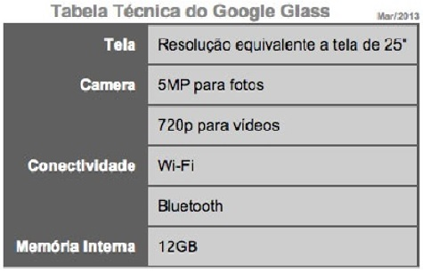

Google Glass
A revolução do google está chegando
Tecnologia > Inovações
Saiba tudo sobre o Google Glass
Por André Saldanha
O que é?
O Google Glass é um acessório em forma de óculos que possibilita a interação dos usuários com diversos conteúdos em realidade aumentada. Também chamado de Project Glass, o eletrônico é capaz de tirar fotos a partir de comandos de voz, enviar mensagens instantâneas e realizar vídeoconferências. Seu lançamento está previsto para 2014, e seu preço deve ser de US$ 1,5 mil. Atualmente o Google Glass encontra-se em fase de testes e já possui um vídeo totalmente gravado com o dispositivo. Além disso, a companhia de buscas registrou novas patentes anti-furto e de desbloqueio de tela para o acessório.

Data de lançamento
Não há uma data específica e oficial para o dispositivo ser lançado, ainda. Pode ser que ele esteja disponível em demonstrações a partir de 2013, mas seu lançamento para as lojas fica para, pelo menos, 2014.
Especificações Técnicas
Tabela Técnica do Google Glass Mar/2013
Como funciona
De acordo com fontes próximas do Google, os óculos vão contar com uma pequena tela de LCD ou AMOLED na parte superior e em frente aos olhos do usuário. Com o uso de uma câmera e GPS, você pode se situar, assim como selecionar opções com o movimento da cabeça
O que você pode fazer com o Google Glasses
O vídeo de divulgação do Google mostra que você pode se transformar em uma espécie de “super-humano”, já que o aparelho pode indicar a quantos metros você está de seu destino, se o metrô está aberto ou fechado, mostrar o clima, agenda e até mesmo permitir que você marque encontros apenas com comandos de voz.
Outras Notícias
video mais recente
Novidades no Glasses
O Google enfim revelou as especificações completas do Google Glass, e com ele uma surpresa ainda inédita no mercado: a gigante das buscas usará um sistema de áudio baseado na transdução por condução. Através das hastes dos óculos, o som será transmitido para o ouvido do usuário por meio de microvibrações em determinados ossos de sua cabeça, sem usar nenhum tipo de alto-falante.
Além da surpresa do áudio, a tela montada a frente do olho do usuário também chamou atenção. Serão 640 x 360 pixels de resolução que, em proporção, equivaleria a um monitor de 25 polegadas de alta definição colocado a 2,5 metros de distância do espectador.